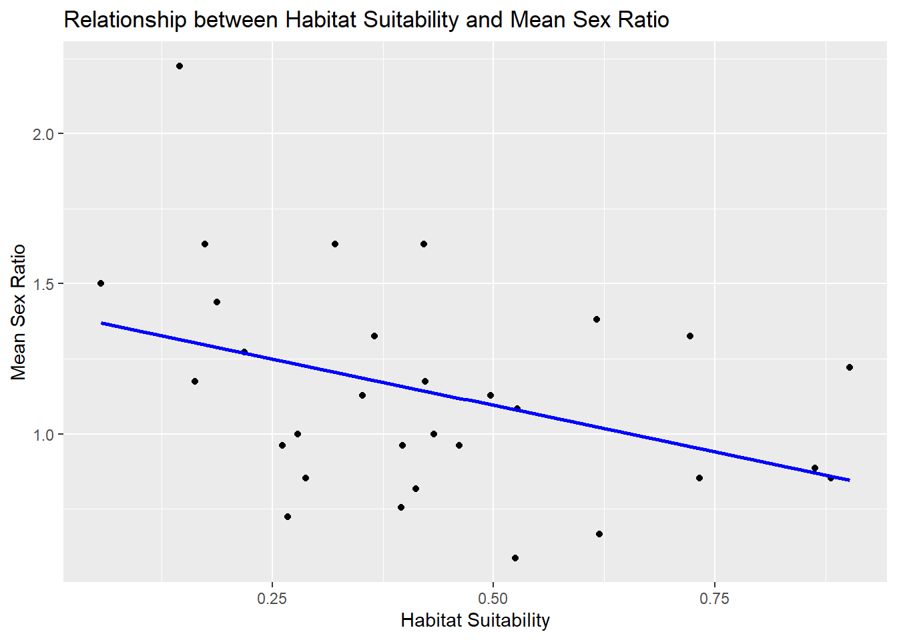
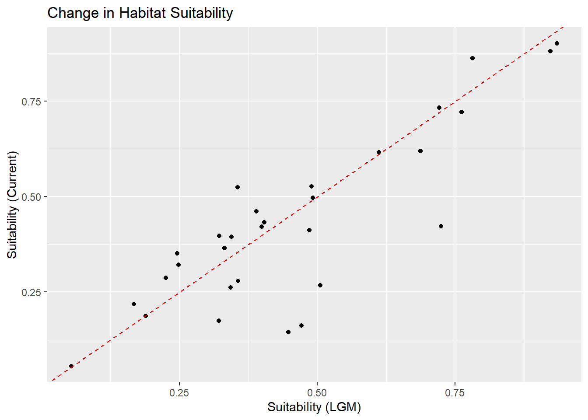
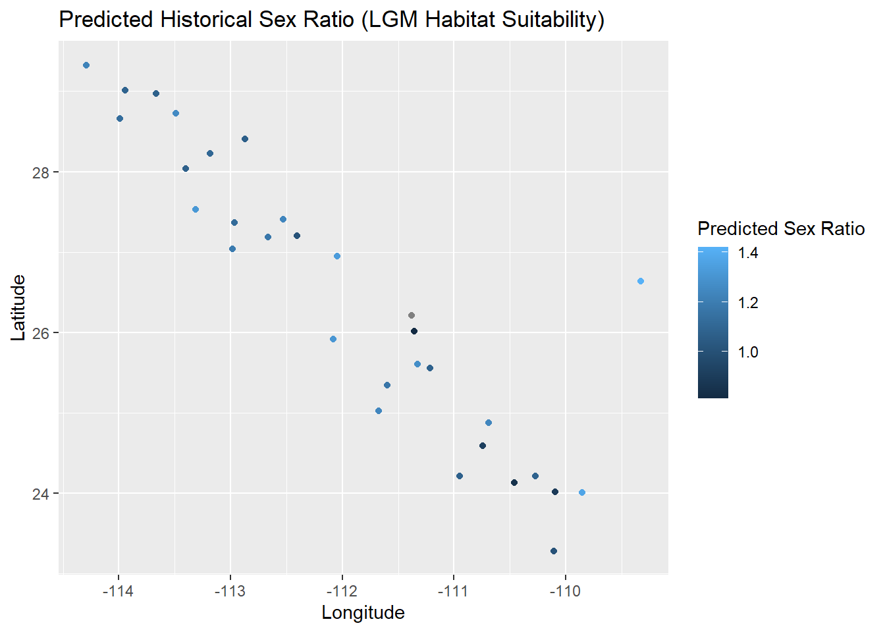

| Site | sex_ratio |
|---|---|
| Site 1 | 0.8518519 |
| Site 10 | 1.5000000 |
| Site 11 | 1.2727273 |
| Site 12 | 1.1739130 |
| Site 13 | 1.3255814 |
| Site 14 | 0.6666667 |
| Site 15 | 0.8181818 |
| Site 16 | 1.1276596 |
| Site 17 | 1.6315789 |
| Site 18 | 2.2258065 |
| Site 19 | 0.8867925 |
| Site 2 | 1.4390244 |
| Site 20 | 1.6315789 |
| Site 21 | 1.7027027 |
| Site 22 | 1.3255814 |
| Site 23 | 1.0000000 |
| Site 24 | 1.1739130 |
| Site 25 | 1.0000000 |
| Site 26 | 0.9607843 |
| Site 27 | 0.8518519 |
| Site 28 | 1.0833333 |
| Site 29 | 1.6315789 |
| Site 3 | 1.3809524 |
| Site 30 | 0.9607843 |
| Site 31 | 0.7543860 |
| Site 4 | 0.8518519 |
| Site 5 | 0.9607843 |
| Site 6 | 0.7241379 |
| Site 7 | 1.2222222 |
| Site 8 | 1.1276596 |
| Site 9 | 0.5873016 |
The Extent of the Impact of Changing Climate on Sonora Desert Dark Beetle Sex Ratio Across Locations
Abstract
Sonora Desert dark beetles (Araptus attenuatus) live inside of the plant Euphoria lomelli. This is my completion of the ENVS 543 Final Exam assignment examining the sex ratios of these beetles across locations.
Methods
Study Area and Data Collection
For this project, I used data from sampled beetle populations collected from various sites across the studied area. The sample locations were recorded using longitude and latitude. For each sample, the sex of the beetles (male or female) was recorded as well as two traits (Phenotype A and Phenotype B).
Sex Ratio Analysis
To determine if the beetle populations at different sites had different sex ratios I first calculated the sex ratio for each site by summarizing the number of males and females. The formula for this is: Sex Ratio = # of Males/# of Females Sites with no females were marked as NA. I then performed a chi-squared test for each site to assess whether the sex ratio deviated from the expected 1:1 ratio. Sites with a p-value less than 0.05 were considered significantly different.
Habitat Suitability and Sex Ratio
I then investigated whether there was a relationship between sex ratio and habitat suitability. Habitat suitability was extracted from the raster file suitability_now.tif. The raster had a resolution of 1.0 square kilometers and each sampling location was matched to a suitability value using spatial coordinates. I then merged the two data points into one column and sorted it by site. This resulted in a dataset for exploring potential correlations.
Phenotypic Data
In addition, phenotypic data was aggregated to calculate the mean values of both Phenotype A and Phenotype B. These averages were combined with the previous data to examine functional relationships.
Statistical Modeling
I used a linear model to assess the relationship between habitat suitability and sex ratio. The first model included only habitat and suitability while the second model included the phenotypic means. Both models were evaluated based on R-squared values and Akaike Information Criterion.
Past vs Present
I then investigated changes in habitat suitability over time using values from the Last Glacial Maximum (LGM). The LGM values were extracted from the suitability_lgm.asc raster file which represented data from 20,000 years ago. The change in suitability between the two time periods was calculated by subtracting the LGM suitability value from the current suitability value. Then, I performed a paired t-test to assess differences.
Prediction Model
I then applied a model used for current habitat suitability to LGM suitability to predict the historic sex ratio at each sampling location.
Visualization
I then created a map plot using ggplot2 to display the predicted values.
Results
These results indicate that there is variation in sex ratios among the sampled sites, with some sites exhibiting male-biased ratios (e.g., Site 18 with a ratio of 2.23), while others have female-biased ratios (e.g., Site 14 with a ratio of 0.667). The differences in sex ratios suggest that sex distribution in these populations may be influenced by factors such as habitat suitability, environmental conditions, or other ecological variables.
Table 1
Here, the significance column shows whether the results of the chi-squared test were significant or not. Significance indicates that the sex ratio for that site deviated from the 1:1 equal proportion of males to females.
| Site | male_count | female_count | sex_ratio | p_value | significant |
|---|---|---|---|---|---|
| Site 1 | 46 | 54 | 0.8518519 | 0.4237108 | FALSE |
| Site 10 | 60 | 40 | 1.5000000 | 0.0455003 | TRUE |
| Site 11 | 56 | 44 | 1.2727273 | 0.2301393 | FALSE |
| Site 12 | 54 | 46 | 1.1739130 | 0.4237108 | FALSE |
| Site 13 | 57 | 43 | 1.3255814 | 0.1615133 | FALSE |
| Site 14 | 40 | 60 | 0.6666667 | 0.0455003 | TRUE |
| Site 15 | 45 | 55 | 0.8181818 | 0.3173105 | FALSE |
| Site 16 | 53 | 47 | 1.1276596 | 0.5485062 | FALSE |
| Site 17 | 62 | 38 | 1.6315789 | 0.0163951 | TRUE |
| Site 18 | 69 | 31 | 2.2258065 | 0.0001447 | TRUE |
| Site 19 | 47 | 53 | 0.8867925 | 0.5485062 | FALSE |
| Site 2 | 59 | 41 | 1.4390244 | 0.0718606 | FALSE |
| Site 20 | 62 | 38 | 1.6315789 | 0.0163951 | TRUE |
| Site 21 | 63 | 37 | 1.7027027 | 0.0093224 | TRUE |
| Site 22 | 57 | 43 | 1.3255814 | 0.1615133 | FALSE |
| Site 23 | 50 | 50 | 1.0000000 | 1.0000000 | FALSE |
| Site 24 | 54 | 46 | 1.1739130 | 0.4237108 | FALSE |
| Site 25 | 50 | 50 | 1.0000000 | 1.0000000 | FALSE |
| Site 26 | 49 | 51 | 0.9607843 | 0.8414806 | FALSE |
| Site 27 | 46 | 54 | 0.8518519 | 0.4237108 | FALSE |
| Site 28 | 52 | 48 | 1.0833333 | 0.6891565 | FALSE |
| Site 29 | 62 | 38 | 1.6315789 | 0.0163951 | TRUE |
| Site 3 | 58 | 42 | 1.3809524 | 0.1095986 | FALSE |
| Site 30 | 49 | 51 | 0.9607843 | 0.8414806 | FALSE |
| Site 31 | 43 | 57 | 0.7543860 | 0.1615133 | FALSE |
| Site 4 | 46 | 54 | 0.8518519 | 0.4237108 | FALSE |
| Site 5 | 49 | 51 | 0.9607843 | 0.8414806 | FALSE |
| Site 6 | 42 | 58 | 0.7241379 | 0.1095986 | FALSE |
| Site 7 | 55 | 45 | 1.2222222 | 0.3173105 | FALSE |
| Site 8 | 53 | 47 | 1.1276596 | 0.5485062 | FALSE |
| Site 9 | 37 | 63 | 0.5873016 | 0.0093224 | TRUE |
Table 2
A linear regression analysis was performed to examine the relationship between habitat suitability and mean sex ratio across sites. The analysis revealed a statistically significant relationship between habitat suitability and the mean sex ratio with habitat suitability explaining approximately 12% of the variance in the sex ratio (R² = 0.125).
The relationship was negative, indicating that as habitat suitability decreases, the mean sex ratio at the sampling sites tends to decrease. This suggests that habitat suitability may influence the sex ratio in beetle populations.
A scatter plot of habitat suitability against mean sex ratio (Figure 1) shows a clear trend, supporting the findings from the regression analysis.
| Site | Latitude | Longitude | habitat_suitability | mean_sex_ratio |
|---|---|---|---|---|
| Site 1 | 24.01950 | -110.0960 | 0.8810290 | 0.8518519 |
| Site 2 | 27.52944 | -113.3161 | 0.1879650 | 1.4390244 |
| Site 3 | 27.20280 | -112.4080 | 0.6163620 | 1.3809524 |
| Site 4 | 25.60521 | -111.3264 | 0.2876230 | 0.8518519 |
| Site 5 | 28.22308 | -113.1826 | 0.4613570 | 0.9607843 |
| Site 6 | 25.91409 | -112.0806 | 0.2673030 | 0.7241379 |
| Site 7 | 26.01550 | -111.3547 | 0.9018780 | 1.2222222 |
| Site 8 | 25.55757 | -111.2156 | 0.4964650 | 1.1276596 |
| Site 9 | 28.40846 | -112.8698 | 0.5242670 | 0.5873016 |
| Site 10 | 26.63783 | -109.3270 | 0.0562845 | 1.5000000 |
| Site 11 | 29.32541 | -114.2935 | 0.2185940 | 1.2727273 |
| Site 12 | 26.94589 | -112.0461 | 0.1627240 | 1.1739130 |
| Site 13 | 27.40498 | -112.5296 | 0.3651910 | 1.3255814 |
| Site 14 | 24.21441 | -110.2725 | 0.6195190 | 0.6666667 |
| Site 15 | 25.34819 | -111.6006 | 0.4125120 | 0.8181818 |
| Site 16 | 27.18232 | -112.6655 | 0.3519050 | 1.1276596 |
| Site 17 | 25.02470 | -111.6750 | 0.1744380 | 1.6315789 |
| Site 18 | 24.00789 | -109.8507 | 0.1455230 | 2.2258065 |
| Site 19 | 24.58843 | -110.7460 | 0.8625610 | 0.8867925 |
| Site 20 | 28.72796 | -113.4897 | 0.4214400 | 1.6315789 |
| Site 21 | 26.20876 | -111.3783 | NA | 1.7027027 |
| Site 22 | 23.28550 | -110.1043 | 0.7217000 | 1.3255814 |
| Site 23 | 24.21150 | -110.9510 | 0.4328730 | 1.0000000 |
| Site 24 | 24.87611 | -110.6917 | 0.4226090 | 1.1739130 |
| Site 25 | 27.03670 | -112.9860 | 0.2791050 | 1.0000000 |
| Site 26 | 28.03661 | -113.3999 | 0.3975000 | 0.9607843 |
| Site 27 | 24.13389 | -110.4624 | 0.7324870 | 0.8518519 |
| Site 28 | 29.01457 | -113.9449 | 0.5264130 | 1.0833333 |
| Site 29 | 27.36320 | -112.9640 | 0.3210530 | 1.6315789 |
| Site 30 | 28.66056 | -113.9914 | 0.2617900 | 0.9607843 |
| Site 31 | 28.96651 | -113.6679 | 0.3953470 | 0.7543860 |
Table 3

Figure 1
| Site | Latitude | Longitude | habitat_suitability | mean_sex_ratio | mean_phenotype_A | mean_phenotype_B |
|---|---|---|---|---|---|---|
| Site 1 | 24.01950 | -110.0960 | 0.8810290 | 0.8518519 | 1.8651845 | 1.7983321 |
| Site 2 | 27.52944 | -113.3161 | 0.1879650 | 1.4390244 | 0.8004514 | 1.9013472 |
| Site 3 | 27.20280 | -112.4080 | 0.6163620 | 1.3809524 | 2.1304091 | 2.6468645 |
| Site 4 | 25.60521 | -111.3264 | 0.2876230 | 0.8518519 | 2.5107731 | 1.7867834 |
| Site 5 | 28.22308 | -113.1826 | 0.4613570 | 0.9607843 | 3.0787502 | 2.7970769 |
| Site 6 | 25.91409 | -112.0806 | 0.2673030 | 0.7241379 | 2.8433351 | 1.4468376 |
| Site 7 | 26.01550 | -111.3547 | 0.9018780 | 1.2222222 | 1.6808541 | 2.8023821 |
| Site 8 | 25.55757 | -111.2156 | 0.4964650 | 1.1276596 | 2.1938159 | 2.7076208 |
| Site 9 | 28.40846 | -112.8698 | 0.5242670 | 0.5873016 | 2.2001248 | 2.6241120 |
| Site 10 | 26.63783 | -109.3270 | 0.0562845 | 1.5000000 | 2.1649294 | 1.7181204 |
| Site 11 | 29.32541 | -114.2935 | 0.2185940 | 1.2727273 | 1.7577298 | 3.1212808 |
| Site 12 | 26.94589 | -112.0461 | 0.1627240 | 1.1739130 | 1.3317008 | 1.9216187 |
| Site 13 | 27.40498 | -112.5296 | 0.3651910 | 1.3255814 | 5.1524872 | 1.9117774 |
| Site 14 | 24.21441 | -110.2725 | 0.6195190 | 0.6666667 | 2.1048871 | 1.3816855 |
| Site 15 | 25.34819 | -111.6006 | 0.4125120 | 0.8181818 | 1.2735895 | 2.0052674 |
| Site 16 | 27.18232 | -112.6655 | 0.3519050 | 1.1276596 | 2.3822879 | 2.6690722 |
| Site 17 | 25.02470 | -111.6750 | 0.1744380 | 1.6315789 | 2.3987101 | 3.4090319 |
| Site 18 | 24.00789 | -109.8507 | 0.1455230 | 2.2258065 | 2.5582947 | 1.6512178 |
| Site 19 | 24.58843 | -110.7460 | 0.8625610 | 0.8867925 | 2.5562777 | 1.6738418 |
| Site 20 | 28.72796 | -113.4897 | 0.4214400 | 1.6315789 | 1.9059960 | 0.6102924 |
| Site 21 | 26.20876 | -111.3783 | NA | 1.7027027 | 3.2043638 | 1.5124468 |
| Site 22 | 23.28550 | -110.1043 | 0.7217000 | 1.3255814 | 0.8946411 | 1.4249428 |
| Site 23 | 24.21150 | -110.9510 | 0.4328730 | 1.0000000 | 3.3405168 | 3.5525280 |
| Site 24 | 24.87611 | -110.6917 | 0.4226090 | 1.1739130 | 2.1491631 | 0.8827347 |
| Site 25 | 27.03670 | -112.9860 | 0.2791050 | 1.0000000 | 1.7410987 | 3.0615324 |
| Site 26 | 28.03661 | -113.3999 | 0.3975000 | 0.9607843 | 2.4567047 | 3.8918242 |
| Site 27 | 24.13389 | -110.4624 | 0.7324870 | 0.8518519 | 2.6861098 | 4.0949427 |
| Site 28 | 29.01457 | -113.9449 | 0.5264130 | 1.0833333 | 2.3510732 | 2.3679339 |
| Site 29 | 27.36320 | -112.9640 | 0.3210530 | 1.6315789 | 2.3030420 | 3.8720484 |
| Site 30 | 28.66056 | -113.9914 | 0.2617900 | 0.9607843 | 0.5063557 | 4.0633052 |
| Site 31 | 28.96651 | -113.6679 | 0.3953470 | 0.7543860 | 1.7738340 | 3.7642126 |
Table 4
I then added the phenotypes into this model.
| x | |
|---|---|
| R-squared Model 1 | 0.1517969 |
| R-squared Model 2 | 0.1809540 |
| AIC Model 1 | 23.2769736 |
| AIC Model 2 | 26.2275762 |
Table 5
Including Phenotype A and Phenotype B improves the model, which is shown by the increase in the R-squared value, but this improvement is small. The inclusion of these phenotypic variables has a higher AIC, indicating that the more complex model (Model 2) does not provide a significantly better fit compared to the simpler Model 1. Therefore, habitat suitability alone is likely more influential in explaining the variation in sex ratios.
Min. 1st Qu. Median Mean 3rd Qu. Max. NA's
-0.308906 -0.071472 0.004647 -0.027583 0.051142 0.168622 1 | Site | Latitude | Longitude | suitability_lgm | suitability_now | change_in_suitability |
|---|---|---|---|---|---|
| Site 1 | 24.01950 | -110.0960 | 0.9227720 | 0.8810290 | -0.0417430 |
| Site 2 | 27.52944 | -113.3161 | 0.1890130 | 0.1879650 | -0.0010480 |
| Site 3 | 27.20280 | -112.4080 | 0.6118770 | 0.6163620 | 0.0044850 |
| Site 4 | 25.60521 | -111.3264 | 0.2251980 | 0.2876230 | 0.0624250 |
| Site 5 | 28.22308 | -113.1826 | 0.3898320 | 0.4613570 | 0.0715250 |
| Site 6 | 25.91409 | -112.0806 | 0.5051860 | 0.2673030 | -0.2378830 |
| Site 7 | 26.01550 | -111.3547 | 0.9347510 | 0.9018780 | -0.0328730 |
| Site 8 | 25.55757 | -111.2156 | 0.4916560 | 0.4964650 | 0.0048090 |
| Site 9 | 28.40846 | -112.8698 | 0.3556450 | 0.5242670 | 0.1686220 |
| Site 10 | 26.63783 | -109.3270 | 0.0541657 | 0.0562845 | 0.0021188 |
| Site 11 | 29.32541 | -114.2935 | 0.1673550 | 0.2185940 | 0.0512390 |
| Site 12 | 26.94589 | -112.0461 | 0.4716300 | 0.1627240 | -0.3089060 |
| Site 13 | 27.40498 | -112.5296 | 0.3316630 | 0.3651910 | 0.0335280 |
| Site 14 | 24.21441 | -110.2725 | 0.6867450 | 0.6195190 | -0.0672260 |
| Site 15 | 25.34819 | -111.6006 | 0.4853990 | 0.4125120 | -0.0728870 |
| Site 16 | 27.18232 | -112.6655 | 0.2463260 | 0.3519050 | 0.1055790 |
| Site 17 | 25.02470 | -111.6750 | 0.3211760 | 0.1744380 | -0.1467380 |
| Site 18 | 24.00789 | -109.8507 | 0.4471890 | 0.1455230 | -0.3016660 |
| Site 19 | 24.58843 | -110.7460 | 0.7814810 | 0.8625610 | 0.0810800 |
| Site 20 | 28.72796 | -113.4897 | 0.3992860 | 0.4214400 | 0.0221540 |
| Site 21 | 26.20876 | -111.3783 | 0.7124060 | NA | NA |
| Site 22 | 23.28550 | -110.1043 | 0.7615080 | 0.7217000 | -0.0398080 |
| Site 23 | 24.21150 | -110.9510 | 0.4039260 | 0.4328730 | 0.0289470 |
| Site 24 | 24.87611 | -110.6917 | 0.7239640 | 0.4226090 | -0.3013550 |
| Site 25 | 27.03670 | -112.9860 | 0.3565710 | 0.2791050 | -0.0774660 |
| Site 26 | 28.03661 | -113.3999 | 0.3218530 | 0.3975000 | 0.0756470 |
| Site 27 | 24.13389 | -110.4624 | 0.7211120 | 0.7324870 | 0.0113750 |
| Site 28 | 29.01457 | -113.9449 | 0.4898480 | 0.5264130 | 0.0365650 |
| Site 29 | 27.36320 | -112.9640 | 0.2485630 | 0.3210530 | 0.0724900 |
| Site 30 | 28.66056 | -113.9914 | 0.3431230 | 0.2617900 | -0.0813330 |
| Site 31 | 28.96651 | -113.6679 | 0.3444950 | 0.3953470 | 0.0508520 |
Table 6

Figure 2
A paired t test was performed here and the results show a t-value of -1.234, with 29 degrees of freedom and a p-value of 0.2271. Since the p-value is greater than 0.05, we fail to reject the null hypothesis. This indicates that there is no statistically significant difference in habitat suitability between the two time periods (LGM and current).
The mean difference in suitability between the two periods is -0.0276, suggesting a slight decrease in suitability from the LGM to the present. However, the 95% confidence interval for the difference in means ranges from -0.0733 to 0.0181, which includes zero.
In summary, based on the results of the paired t-test, there is no significant change in habitat suitability at the sampled locations between the Last Glacial Maximum and the present.
'data.frame': 31 obs. of 4 variables:
$ Site : chr "Site 1" "Site 2" "Site 3" "Site 4" ...
$ Latitude : num 24 27.5 27.2 25.6 28.2 ...
$ Longitude : num -110 -113 -112 -111 -113 ...
$ habitat_suitability_lgm: num 0.923 0.189 0.612 0.225 0.39 ...
Figure 3
Variations in sex ratios appear to correlate with spacial distribution. Areas with higher suitability during the LGM tended to have higher predicted sex ratios. If habitat suitability is an indicator of climate, climate conditions may have had a significant role in shaping the distribution of sex ratios.